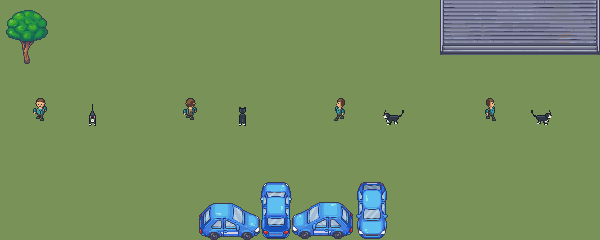

Pending production draft. Natural quadruped, fixed40-degree elevated camera/10px per unit; profiles15px. Ground anchor fixed, preview travel separate.
Observations/limits | Native loop | Enlarged loop | Integrity
